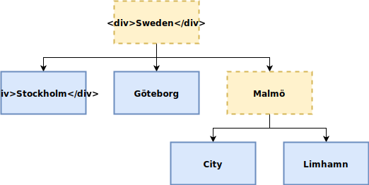
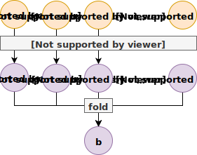
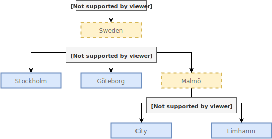

Domain Modeling with Haskell Data Structures
Oskar Wickström
Øredev, November 2018
Introduction
- I work at Symbiont
- Remote
- Haskell
- Long-standing interest in DDD
- Applying Haskell since early days
Domain Modeling & Haskell
Domain Modeling
- Capturing selected aspects of a problem domain
- Data
- Behavior
- Clear and unambiguous naming
- Separate bounded contexts
- Reify the domain in our code
Haskell

- All the flexibility we need
- Sum types
- Product types
- Type classes
- Powerful type system
- Guides your implementation
- Maintainable code
- Mature compiler (GHC) and ecosystem
Modeling in Haskell
- Express the domain model using data types
- Structure computation as data structures
- “Type-Driven Development”
- Change to data types to model the new behavior
- Fix all the type errors
- Test, and possibly refine your model
Agenda
- Basics of Haskell language
- Larger example
- Data types
- Functions
- Effects
- Common abstractions
- Scratching the surface!
Haskell Refresher
Product Types
data AccountBalance = AccountBalance Money DateProduct Types with Record Syntax
data Customer =
Customer
{ firstName :: Text
, lastName :: Text
}
Sum Types
data MealPreference
= Omnivore
| OvoLacto
| Vegetarian
Functions
fullName :: Customer -> Text
fullName customer =
firstName customer <> " " <> lastName customer
Pattern Matching
data Meal
= ChickenSandwich
| Omelette
| ChickpeaCurry
formatMeal :: Meal -> Text
formatMeal meal = case meal of
ChickenSandwich -> "Chicken Sandwich"
Omelette -> "Omelette"
ChickpeaCurry -> "Chickpea Curry"
Nested Data
data Order = Order { orderCustomer :: Customer
, orderMeal :: Meal
}
airlineStyleOrder :: Customer -> MealPreference -> Order
airlineStyleOrder customer pref =
case pref of
Omnivore -> Order customer ChickenSandwich
OvoLacto -> Order customer Omelette
Vegetarian -> Order customer ChickpeaCurry
Effects
printOrder :: Order -> IO ()
printOrder order =
let msg =
fullName (orderCustomer order)
<> " ordering "
<> formatMeal (orderMeal order)
<> "."
in Text.putStrLn msg
All Together, Now!
> let me = Customer "Oskar" "Wickström"
> let order = airlineStyleOrder me OvoLacto
> printOrder order
Oskar Wickström ordering Omelette.Functor
class Functor f where
fmap :: (a -> b) -> f a -> f b
Functor for Maybe
A
Functorinstance forMaybe:data Maybe a = Just a | Nothing instance Functor Maybe where fmap f (Just a) = Just (f a) fmap _ Nothing = NothingWe can then
fmapfunctions overMaybevalues:fmap (+1) (Just 10) -- Just 11 fmap (+1) Nothing -- Nothing
Functor for IO
randomDouble :: IO Double -- between 0.0 and 1.0
randomLotteryPrize :: IO Integer
randomLotteryPrize =
fmap toAmount randomDouble
where
toAmount d = round (d * 1000000)
Example: Project Management System
Project Management
- A simple project management system
- Hierarchy of projects
- Budgets
- Transactions
- Reports
- Not terribly exciting, but relatable
- We’ll explore:
- Data types
- Some very useful abstractions
Project Tree

Project Data Type
data Project
= SingleProject ProjectId
Text
| ProjectGroup Text
[Project]
deriving (Show, Eq)
Budget
data Budget = Budget
{ budgetIncome :: Money
, budgetExpenditure :: Money
} deriving (Show, Eq)
Transaction
data Transaction
= Sale Money
| Purchase Money
deriving (Eq, Show)
Reporting
data Report = Report
{ budgetProfit :: Money
, netProfit :: Money
, difference :: Money
} deriving (Show, Eq)
Calculating a Report
calculateReport :: Budget -> [Transaction] -> Report
calculateReport budget transactions = Report
{ budgetProfit = budgetProfit'
, netProfit = netProfit'
, difference = netProfit' - budgetProfit'
}
where
budgetProfit' = budgetIncome budget - budgetExpenditure budget
netProfit' = getSum (foldMap asProfit transactions)
asProfit (Sale m) = pure m
asProfit (Purchase m) = pure (negate m)Calculating a Report
calculateReport :: Budget -> [Transaction] -> Report
calculateReport budget transactions = Report
{ budgetProfit = budgetProfit'
, netProfit = netProfit'
, difference = netProfit' - budgetProfit'
}
where
budgetProfit' = budgetIncome budget - budgetExpenditure budget
netProfit' = getSum (foldMap asProfit transactions)
asProfit (Sale m) = pure m
asProfit (Purchase m) = pure (negate m)Calculating a Report
calculateReport :: Budget -> [Transaction] -> Report
calculateReport budget transactions = Report
{ budgetProfit = budgetProfit'
, netProfit = netProfit'
, difference = netProfit' - budgetProfit'
}
where
budgetProfit' = budgetIncome budget - budgetExpenditure budget
netProfit' = getSum (foldMap asProfit transactions)
asProfit (Sale m) = pure m
asProfit (Purchase m) = pure (negate m)Calculating a Report
calculateReport :: Budget -> [Transaction] -> Report
calculateReport budget transactions = Report
{ budgetProfit = budgetProfit'
, netProfit = netProfit'
, difference = netProfit' - budgetProfit'
}
where
budgetProfit' = budgetIncome budget - budgetExpenditure budget
netProfit' = getSum (foldMap asProfit transactions)
asProfit (Sale m) = pure m
asProfit (Purchase m) = pure (negate m)Calculating a Report
calculateReport :: Budget -> [Transaction] -> Report
calculateReport budget transactions = Report
{ budgetProfit = budgetProfit'
, netProfit = netProfit'
, difference = netProfit' - budgetProfit'
}
where
budgetProfit' = budgetIncome budget - budgetExpenditure budget
netProfit' = getSum (foldMap asProfit transactions)
asProfit (Sale m) = pure m
asProfit (Purchase m) = pure (negate m)Recursively Calculating Reports
calculateProjectReport :: Project -> IO Report
calculateProjectReport project =
case project of
SingleProject p _ ->
calculateReport
<$> DB.getBudget p
<*> DB.getTransactions p
ProjectGroup _ projects ->
foldMap calculateProjectReport projectsRecursively Calculating Reports
calculateProjectReport :: Project -> IO Report
calculateProjectReport project =
case project of
SingleProject p _ ->
calculateReport
<$> DB.getBudget p
<*> DB.getTransactions p
ProjectGroup _ projects ->
foldMap calculateProjectReport projectsRecursively Calculating Reports
calculateProjectReport :: Project -> IO Report
calculateProjectReport project =
case project of
SingleProject p _ ->
calculateReport
<$> DB.getBudget p
<*> DB.getTransactions p
ProjectGroup _ projects ->
foldMap calculateProjectReport projectsRequirements for foldMap
Semigroup (associative binary operation)
class Semigroup a where (<>) :: a -> a -> aMonoid (Semigroup with identity element)
class Semigroup a => Monoid a where mempty :: a
Semigroup and Monoid for Report
instance Semigroup Report where
Report b1 n1 d1 <> Report b2 n2 d2 =
Report (b1 + b2) (n1 + n2) (d1 + d2)
instance Monoid Report where
mempty = Report 0 0 0
foldMap
foldMap
:: (Foldable f, Monoid b)
=> (a -> b)
-> f a
-> bfoldMap
foldMap
:: (Foldable f, Monoid b)
=> (a -> b)
-> f a
-> bfoldMap
foldMap
:: (Foldable f, Monoid b)
=> (a -> b)
-> f a
-> bfoldMap on Lists

Recursive foldMap

Printing Projects
asTree :: Project -> Tree String
asTree project =
case project of
SingleProject (ProjectId p) name ->
Node (printf "%s (%d)" name p) []
ProjectGroup name projects ->
Node (Text.unpack name) (map asTree projects)
prettyProject :: Project -> String
prettyProject = drawTree . asTreePrinting Projects
asTree :: Project -> Tree String
asTree project =
case project of
SingleProject (ProjectId p) name ->
Node (printf "%s (%d)" name p) []
ProjectGroup name projects ->
Node (Text.unpack name) (map asTree projects)
prettyProject :: Project -> String
prettyProject = drawTree . asTreePrinting Projects
asTree :: Project -> Tree String
asTree project =
case project of
SingleProject (ProjectId p) name ->
Node (printf "%s (%d)" name p) []
ProjectGroup name projects ->
Node (Text.unpack name) (map asTree projects)
prettyProject :: Project -> String
prettyProject = drawTree . asTreeDefining a Project
someProject :: Project
someProject = ProjectGroup "Sweden" [stockholm, göteborg, malmö]
where
stockholm = SingleProject 1 "Stockholm"
göteborg = SingleProject 2 "Göteborg"
malmö = ProjectGroup "Malmö" [city, limhamn]
city = SingleProject 3 "Malmö City"
limhamn = SingleProject 4 "Limhamn"
Printing Projects in the REPL
> putStrLn (prettyProject someProject)
Sweden
|
+- Stockholm (1)
|
+- Göteborg (2)
|
`- Malmö
|
+- Malmö City (3)
|
`- Limhamn (4)Printing Reports
prettyReport :: Report -> String
prettyReport r =
printf
"Budget: %.2f, Net: %.2f, difference: %+.2f"
(unMoney (budgetProfit r))
(unMoney (netProfit r))
(unMoney (difference r))
Printing Reports in the REPL
> r <- calculateProjectReport someProject
> putStrLn (prettyReport r)
Budget: -14904.17, Net: 458.03, difference: +15362.20What we’ve used so far
- Basic Haskell data types
- Explicit recursion
- Monoid
- Functor
- Foldable
New Requirements!
A Tree Of Reports
- One big report for the entire project is not enough
- The customer needs them for all individual projects
Parameterizing Project
data Project a
= SingleProject Text
a
| ProjectGroup Text
[Project a]
deriving (Show, Eq, Functor, Foldable, Traversable)Parameterizing Project
data Project a
= SingleProject Text
a
| ProjectGroup Text
[Project a]
deriving (Show, Eq, Functor, Foldable, Traversable)Traversable
traverse
:: (Traversable t, Applicative f)
=> (a -> f b)
-> t a
-> f (t b)Traversable
traverse
:: (Traversable t, Applicative f)
=> (a -> f b)
-> t a
-> f (t b)Traversable
traverse
:: (Traversable t, Applicative f)
=> (a -> f b)
-> t a
-> f (t b)Example of Traversable
getDescription :: ProjectId -> IO Text
myProject :: Project ProjectId
example :: IO (Project Text)
example = traverse getDescription myProjectCalculating Reports with Traversable
calculateProjectReports
:: Project ProjectId
-> IO (Project Report)
calculateProjectReports =
traverse $ \p ->
calculateReport
<$> DB.getBudget p
<*> DB.getTransactions pCalculating Reports with Traversable
calculateProjectReports
:: Project ProjectId
-> IO (Project Report)
calculateProjectReports =
traverse $ \p ->
calculateReport
<$> DB.getBudget p
<*> DB.getTransactions pAccumulating Reports with Foldable
accumulateProjectReport :: Project Report -> Report
accumulateProjectReport = fold
Adapting the Pretty Printing
asTree
:: (a -> String)
-> Project a
-> Tree String
prettyProject
:: (a -> String)
-> Project a
-> StringPretty Printing the Reports
> pr <- calculateProjectReports someProject
> putStrLn (prettyProject prettyReport pr)
Sweden
|
+- Stockholm: Budget: -2259.99, Net: 391.23, difference: +2651.22
|
+- Göteborg: Budget: -3204.79, Net: -228.31, difference: +2976.48
|
`- Malmö
|
+- Malmö City: Budget: -6958.82, Net: 2811.88, difference: +9770.70
|
`- Limhamn: Budget: 5856.93, Net: 1941.43, difference: -3915.50Pretty Printing the Reports (cont.)
> putStrLn (prettyReport (accumulateProjectReport pr))
Budget: -6566.67, Net: 4916.23, difference: +11482.90What we’ve added to our toolbox
- Parameterized Data Type
- Traversable
“No, that’s not what we want.”
Actual Requirements
- The customer wants reporting on all levels:
- project groups
- single projects
- We need to change our model again
Parameterizing Project Even More
data Project g a
= SingleProject Text
a
| ProjectGroup Text
g
[Project g a]
deriving (Show, Eq, Functor, Foldable, Traversable)Calculating Reports with WriterT
calculateProjectReports
:: Project g ProjectId
-> IO (Project Report Report)
calculateProjectReports project =
fst <$> runWriterT (calc project)
where -- ...Calculating Reports with WriterT
calculateProjectReports
:: Project g ProjectId
-> IO (Project Report Report)
calculateProjectReports project =
fst <$> runWriterT (calc project)
where -- ...For A Single Project
calc (SingleProject name p) = do
report <- liftIO $
calculateReport
<$> DB.getBudget p
<*> DB.getTransactions p
tell report
pure (SingleProject name report)For A Single Project
calc (SingleProject name p) = do
report <- liftIO $
calculateReport
<$> DB.getBudget p
<*> DB.getTransactions p
tell report
pure (SingleProject name report)For A Single Project
calc (SingleProject name p) = do
report <- liftIO $
calculateReport
<$> DB.getBudget p
<*> DB.getTransactions p
tell report
pure (SingleProject name report)For a Project Group
calc (ProjectGroup name _ projects) = do
(projects', report) <- listen (traverse calc projects)
pure (ProjectGroup name report projects')Adapting the Pretty Printing
asTree
:: (g -> String)
-> (a -> String)
-> Project g a
-> Tree StringprettyProject
:: (g -> String)
-> (a -> String)
-> Project g a
-> StringPretty Printing the Reports
> pr <- calculateProjectReports someProject
> putStrLn (prettyProject prettyReport prettyReport pr)
Sweden: Budget: -9278.10, Net: +4651.81, difference: +13929.91
|
+- Stockholm: Budget: -3313.83, Net: -805.37, difference: +2508.46
|
+- Göteborg: Budget: -422.48, Net: +1479.00, difference: +1901.48
|
`- Malmö: Budget: -5541.79, Net: +3978.18, difference: +9519.97
|
+- Malmö City: Budget: -4069.45, Net: +2185.02, difference: +6254.47
|
`- Limhamn: Budget: -1472.34, Net: +1793.16, difference: +3265.50Even More Learnings
- Explicit recursion might still be necessary
- The
WriterTmonad transformer - There are many ways to leverage
Monoid
Remaining Issues
- Explicit recursion can, with large data types, be error-prone
- Recursion schemes is an advanced solution
- Current
Projecttype has a hidden coupling to the reporting module- The
gandaparameters are only there for reporting
- The
Summary
What we haven’t covered
- Validation
- Writes
- Cyclic references
- Complex database queries
- Pretty front-end
Domain Modeling in Haskell
- Use Haskell data types
- As the basis of your domain model
- To structure computation
- Leverage great abstractions
- Functor
- Semigroup
- Monoid
- Foldable
- Traversable
- Enjoy evolving and refactoring existing code
Next Steps
Thank you!
- Twitter: @owickstrom
- Website: https://wickstrom.tech
- Credits:
- By Jacqui Barker - Gnarly Old TreeUploaded by Jacopo Werther, CC BY 2.0, https://commons.wikimedia.org/w/index.php?curid=26259218
- Maximum overbusiness
- UML Diagram